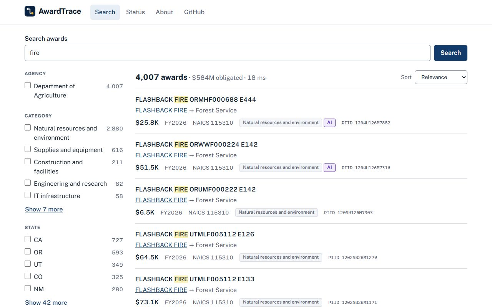

Search federal contracts, with every AI label measured.
AwardTrace makes the Department of Agriculture's contract awards searchable, from USAspending.gov data updated weekly. A Claude classifier sorts each award into a category, and it had to beat the government's own product codes before the site would show its answers.
Open the live app → Read the code
The live app runs weekdays from 8:00 to 20:00 Pacific, and sleeps the rest of the time to save money.

How it works
- USAspendingMonthly contract files
- KafkaOne event per transaction
- PostgreSQLAwards rebuilt from transactions
- ElasticsearchSearch, filters, and sorting
- The appReact and a REST API
The pipeline
Every file is kept in S3 as downloaded, then published to Kafka one transaction at a time, keyed by award so each award's events stay in order. Each award is rebuilt from its transactions, so late or replayed data can't roll it back.
The outbox
When an award changes, the notice for the search index is written in the same database transaction. A relay publishes it and the indexer copies the award into Elasticsearch, so the index never misses a change or hears about one that didn't happen.
The classifier
Claude Haiku 4.5 reads each description once and picks a category, through half-price batches for the backfill and under a $1 daily cap after that. Every AI category on the site carries an AI badge.
Results
The classifier and a baseline built from the government's product codes were scored on the same hand-labeled descriptions, under decision rules fixed before either ran.
- Classifier accuracy
- {{classifier}}
- Claude Haiku 4.5, the model the site uses
- Product-code baseline
- {{baseline}}
- The government's codes, mapped to the same categories
- Hosting
- $29 a month
- One EC2 host, running on weekday hours